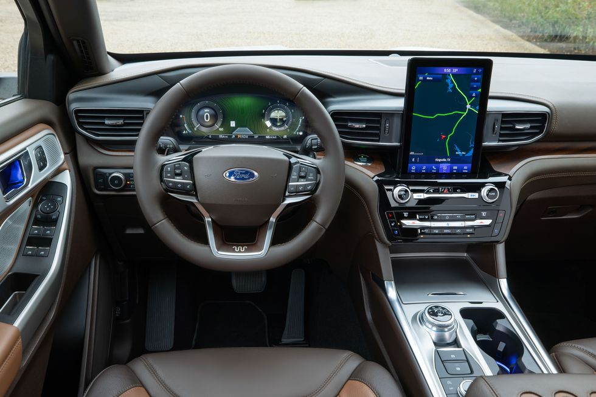

The Start of the Ford Explorer in 1991
" 1554 Cumberland Avenue, Pikeville, Tennessee 37377"

" 1554 Cumberland Avenue, Pikeville, Tennessee 37377"

The interior of the Explorer for the 1991 Model Year proved to be groundgreaking especially for the early 90's everone loved the soft cloth seats. That proved well on long road trips.

Fords 4.0 OHV was no stranger in the 1990's. Ford used this same engine in a lot of their diffrent vehicles for the time, naming a few was the Explorer and Ford Ranger 2WD and 4WD.
The Ford Explorer is often considered an iconic SUV, especially in the United States. It was one of the first SUVs to gain widespread popularity in the early 1990s when it was introduced as a family-friendly alternative to traditional truck-based SUVs. The Explorer played a significant role in popularizing the SUV segment, and it has a long and successful history in the automotive market. Over the years, the Ford Explorer has gone through several generations and changes in design and features. It has been a top-selling SUV for many years, and its nameplate is well-recognized. However, whether it is considered iconic can be somewhat subjective and dependent on personal opinions and regional perspectives. Nonetheless, it has certainly made a significant impact in the SUV market and is a recognizable and influential model in the automotive industry.
Read More...